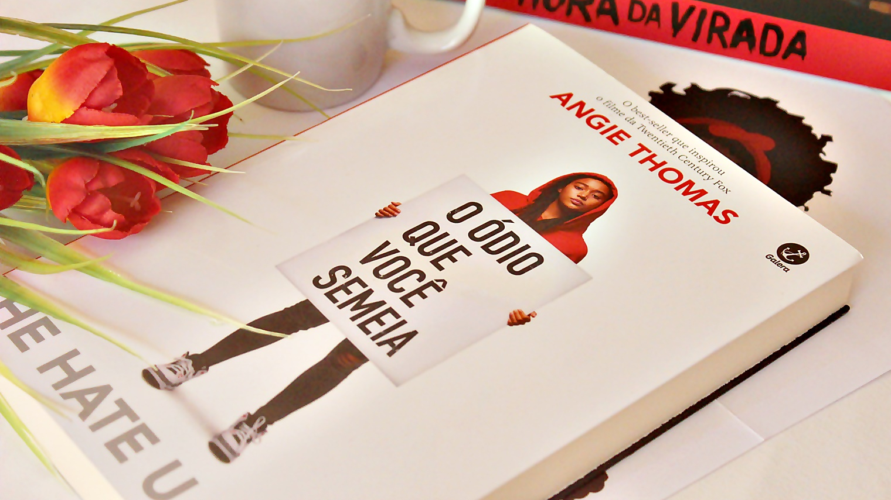

O Ódio que Você Semeia - Angie Thomas
02 de Abril de 2025 11:30 Antes de qualquer coisa, preciso descrever uma época muito marcante na história dos Estados Unidos.
Na década de 1990, os Estados Unidos passava por uma grande desigualdade social. Muitas pessoas foram mortas por qualquer motivo, ou até sem motivo. O que não faltava era a opressão policial, que agia de maneira agressiva e com abordagens violentas e racistas, que só aumentava a repressão, equanto o acesso a saúde, educação e economia para a população negra se limitava. Esse cenário gerou grande revolta e foram feitos muitos protestos para que a população fosse ouvida.
Nessa mesma época foi formado o grupo de rap/hip hop N.W.A "Negros Com Atitude" que fizeram a canção Fuck tha Police onde a letra protesta contra a brutalidade policial e a discriminação racial. E desde seu lançamento, o slogan continua a influenciar a cultura popular na forma de camisetas, obras de arte e expressão política.
Movimento Thug Life
Por volta dessa mesma época, surgiu o movimento social Thug Life, criado pelo rapper e ativista Tupac, e embora muitas vezes fosse associado ao crime e à vida marginal, o Thug Life era na verdade a voz da resistência, com intuito de diminuir as mortes banais, e a violência. E acabar com as injustiças sociais, enfrentadas especialmente por jovens negros e pobres das periferias americanas. Tupac deu às pessoas a chance de serem ouvidas, e se tornou uma das vozes mais potentes da sua geração.
O termo Thug Life é uma sigla que significa "O ódio que você dá às crianças pequenas fode com todo mundo". Essa frase tem a ideia central do movimento: uma sociedade que marginaliza, abandona e violenta seu povo, inevitavelmente sofrerá as consequências desse abandono. Então, o Thug Life se torna a voz dessas pessoas, o barulho que elas fazem para serem ouvidas.
"Tem gente como Brenda, que acha que precisa delas para sobreviver, e tem os Khalils, que acham que precisam vendê-las para sobreviver. As Brendas não conseguem emprego se não estiverem limpas, e não podem pagar reabilitação se não tiverem emprego. Quando os Khalils são presos por venderem drogas, eles passam a maior parte da vida na prisão, outra indústria de bilhões de dólares, ou têm uma dificuldade enorme para conseguir um emprego e muitas vezes acabam vendendo drogas de novo. Esse é o ódio que estão semeando, um sistema elaborado contra nós. Essa é a vida bandida, a vida marginal, a Thug Life."
Starr é uma jovem que vive com sua família na periferia, mas que estuda em uma escola de elite, de classe alta. Então ela se pega dividida entre dois mundos, e acaba tendo que ser duas pessoas diferentes, pois as pessoas dessa escola de elite não conhecem e nem entendem a realidade à qual ela pertence. O que nos traz uma reflexão para a visão errônea de muitas pessoas, de que a vida em comunidades, periferias e subúrbio é uma vida marginal.
O ponto principal da história é quando ela vê seu amigo Khalil ser morto pela policia, simplesmente por negligência. O que acontece de forma recorrente desde aquela época até hoje. Então Starr passa por um processo de tomar a voz do ocorrido, afinal ela foi a única a testemunhar o que aconteceu. A morte de Khalil é um gatilho para um trauma que ela viveu ainda na infância de perder outra pessoa. Mas também se torna um gatilho para enfrentar o preconceito e o racismo. Então Starr começa a refletir sobre o ambiente ao qual ela está inserida e quais relações ela está cultivando. Nisso, ela percebe o preconceito enraizado nas pessoas.
"Traficante. É assim que elas o veem agora. Não importa que ele seja suspeito de tráfico. "Traficante" fala mais alto do que "suspeito" pode falar."
Referências
Eu não poderia deixar de mencionar a riqueza de referências culturais, sociais e politicas que o livro traz. O título original do livro faz referência ao próprio movimento Thug Life Onde Thug significa exatamente (The Hate U Give) O Ódio Que Você Semeia. Uma frase amplamente discutida durante o livro que simboliza como o ódio e a opressão têm consequências devastadoras para toda a sociedade.
A obra também tem como inspiração o movimento Black Lives Metter traduzindo, Vidas Negras Importam. Que pertencia aos Pantera Negras, um grupo de ativista que defendia os direitos civis negros nos EUA.
Starr é fã de Harry Potter, e ela o menciona ao decorrer da trama, dizendo que seu pai até compara as gangues com as casas do filme, onde cada um tem suas próprias cores, seus esconderijos e nenhum dedura o outro. Outra referências a cultura pop é a série Um Maluco no Pedaço, que traz Will Smith como um exemplo de alguém que sua identidade mesmo em ambientes diferentes.
E ainda por cima, a narrativa menciona os artistas Kendrick Lamar e Drake, que são ícones da música negra contemporânea.
No final, como já era de se esperar, o policial sai ileso, sem ser acusado de nada. Então a luta ainda continua. A autora toca muito nesse ponto de incomodar o leitor. Ela quer que a gente se sinta desconfortável diante das situações de injustiça e preconceito, e não se acomodar e fazer "vista grossa".
Livro X Filme
Em 2018 o filme foi adaptado para os cinemas. Estrelado por Amandla Stenberg (Starr) e Algee Smith (Khalil), a adaptação possui algumas pequenas diferenças do livro.
Personagem DeVante
Quando DeVante foge de King para proteger sua família, Big Mav (Pai de Starr) é quem o ajuda. E o garoto é como outro filho para ele. Mas no filme esse personagem foi excluído.
Tio Carlos e Lisa
No filme, Tio Carlos não tem muita conexão com sua irmã Lisa como mostra no livro. Os dois sempre estavam um na casa do outro, e desde de criança ele sempre foi muito meloso com a irmã. No livro, Tio Carlos também é apresentado fazendo papel de pai de Starr enquanto Big Mav estava preso, já no filme não observamos esses detalhes em cima do que Starr considera família.
Briga Starr x Hailey
No livro, quando Hailey faz um comentário desnecessário dizendo que Starr deveria superar a morte de Khalil, Starr vai para cima da garota e bate nela. Ainda por cima os namorados das meninas aparecem para separar a briga, e no fim, os quatro levam suspensão. Mas no filme é diferente, Starr não agride Hailey, apenas à ameaça com uma escova de cabelo, enquanto "a pobre coitada" cai no chão e chora.
Baile de Formatura
Graças à obra original, temos a chance de ver a cena cômica de Chris se declarando para Starr com a música de abertura de Um Maluco no Pedaço. Mas infelizmente essa parte foi cortada do filme. E confesso que senti falta dela. Na adaptação temos apenas a cena de Starr entrando, e logo em seguida corta para a cena de Starr e Chris dentro do carro após o baile. E a única referência a Um Maluco no Pedaço é de um pôster mostrado rapidamente no ínicio do filme.
Final
Eu particularmente gostei muito mais do final do filme. O livro termina com a reconstrução do mercado, e com DeVante se propondo a expor todos os podres de King, mas deixando um desfecho entreaberto.
Já o final no filme, depois que está todo mundo estérico na porta da loja que pegou fogo, Big Mav parte para cima de King. Ele por sua vez, já põe a mão na parte de traz da calça para pegar a arma. Até que o pequeno Sekani grita e aponta a arma para King, defendendo o pai. Uma criança segurando uma arma! É nesse momento que podemos ver a Thug Life. O ódio que você semeia nas crianças fode todo mundo. Mas tudo acaba bem, e finalmente King é detido.
Essa cena é simplesmente de partir o coração! olha tudo que "precisa" acontecer para que o mundo entenda. Mais quantos jovens vão precisar morrer injustamente, devido ao racismo, o preconceito e a violência policial para que eles entendam?